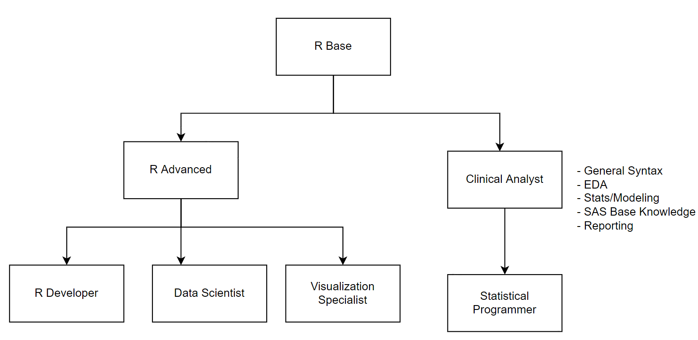

1 Exam Levels
A foundational skillset must be defined for any programming language, R is no different. In order to properly build a reputable open source assessment, exam structure must exist.A brief description of each exam description is provided below.
The following exams are considered core exams and pre-requisites for R specialization:
- R Advanced
- Clinical Analyst
The following exams were chosen for R specialization:
- R Developer
- Data Scientist
- Visualization Specialist
- Statistical Programmer

1.1 R Base
Basic knowledge of R programming - data types, functions, libraries, graphs, etc
1.2 Clinical Analyst
Bilingual programmer for clinical trials- SAS base knowledge, working with SAS and R, basic data analysis and modeling overview, general syntax, data visualization, CDISC/GCP base knowledge, clinical reporting in R.
1.3 Statistical Programmer
SAP, Survival Analysis, Covariate Adjustments, Mixed Effect Modeling, Adverse effects, etc.
1.4 R Advanced
Advanced knowledge of R programming - OOP (S3, S4, R6/R7), vectors, expressions, etc
1.5 R Developer
Emphasis on devtools, package development, API retrieval, code modularization practices, testthat
1.6 Data Scientist
Vetiver, keras, working with python and R, EDA, modeling, tidy modeling, SparklyR
1.7 Visualization Specialist
ggplot2, plotly, Shiny dashboarding, JavaScript, CSS/HTML